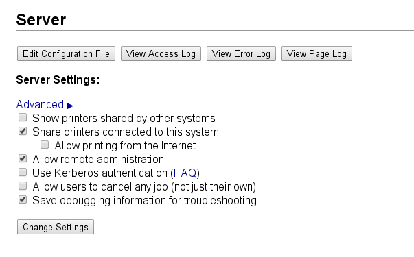
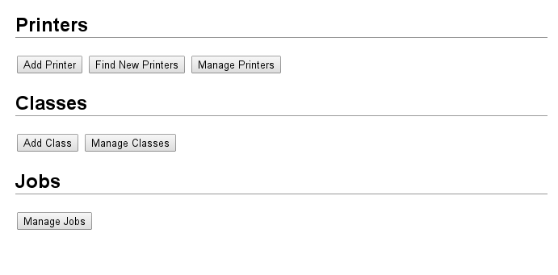
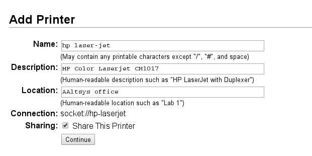
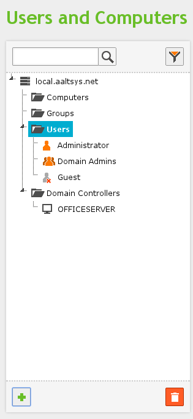
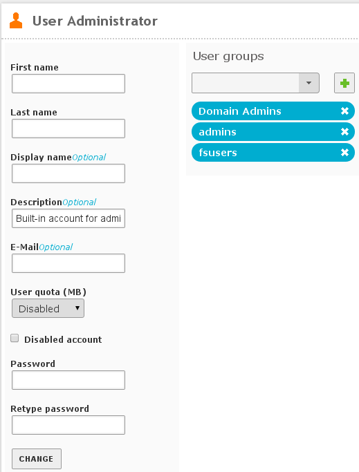
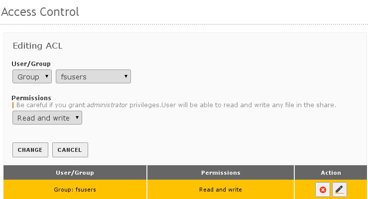

Office File Sharing¶
This article describes activities in the Office section of the left menu.
Note
This section presents tasks in dependency order, so that each section is visited only once.
Printer Sharing¶
Zentyal uses CUPS, or Common Unix Printing System, to define network printers and share them through the server. To begin, make a list of network-attached printers, their manufacturers, models, and IP addresses.
Then open Zentyal by one of the following approaches:
- On the host console, open a Firefox session at https://localhost
- At a local workstation, browse to address https://__hostname__
- At a local workstation, browse to address https://192.168.2.241
Go to Office ‣ Printer Sharing, and make sure that the Listen checkbox is checked for each active interface, as shown following.

Note
The CUPS web interface can be displayed only in the local network. Therefore only local workstations or the server console can administer CUPS.
The browser may present a certificate warning the first time you use CUPS. Accept this certificate; it is perfectly safe to do so. This certificate is issued from your local server for use by the server.
- Press <Ctrl-T> to open a new browser tab.
- Enter the web address https://192.168.2.241:631
- If required, follow your browser’s instructions to add a security exception.
Note
Zentyal 2.2: Below Printer Sharing, click the link to the CUPS Web Interface.
This displays the CUPS interface.
Press the Administration menu label.
In the CUPS authentication message, enter your Zentyal administrator username and password.
In section Server, check the boxes for Share printers connected to this system and for Allow remote administration.
Click Change Settings. These options are shown following:
In section Printers, click Add Printer to enter a new printer queue.

Adding printers in CUPS is inherently similar to adding printers in any OS: select the connection, the printer manufacturer, the printer model, and any settings specific to the printer installation. As such, this process is not described further here.
Check the Sharing: Share this printer box when saving a printer setup. This allows the printer queue to be used from other workstations as a SAMBA share. Once all printers are defined, close the CUPS tab and return to Zentyal.
Note
We recommend that all shared printers be defined as network printers shared from the server. Also, for enhanced security, these printers may be connected on the WAN side of the network and then accessed by LAN computers through server queues.
User Template¶
By default, Zentyal limits the size of user shares.
In the Office ‣ Users and Groups ‣ User Template section, either (1) change the Default user quota to Disabled, or (2) Change the quota to 0 (unlimited). Then click Change.

LDAP Settings¶
In the LDAP module PAM settings:
- Set the Default login shell to bash
- Click the Enable PAM: checkbox to turn on PAM (Pluggable Authentication Module)
- Click Change.

On the Zentyal top bar, click Save Changes and then click the Save button to record your changes.
Users¶
From each network workstation, make a list of each username and the corresponding password which is used on the workstation. Make sure that each username is unique to a single person and has exactly one password. Replace system-names such as USER, OWNER, and ADMINISTRATOR with actual person-names or office role-names (payclerk, manager, etc.).
In Zentyal, select Office ‣ Users and Groups ‣ Users on the menu. Use the Add User feature to add each network user on the server.

Once all the users are added, they will all display in the users list. Note that your initial administrative user is not on the list, as shown below.
Hint
For file sharing users, click Add after entering names and passwords. For administrative users, click Add and Edit, then check the box for Administration rights and click Change.
If any user is entered in error, click the Edit icon on the user’s line. Then click the Delete user button to remove the user. Similarly, edit a user to add or remove administration rights, or to change group memberships.
Note
Maybe it is a bug, but user directories are not removed when users are deleted.
Groups¶
Once all users are entered, select Office ‣ Users and Groups ‣ Groups. Enter a group fsusers and a group admins, as shown here.

Click Add and edit to complete the group information. For the fsusers group, <Shift-Click> each name in the Users not in group list, and then click the left-arrow to move them to the Users in group list.

In the Printers section, click the Allow all priters checkbox and then Change, so that all users can access printers as shown.

File Sharing¶
Open the Office ‣ File Sharing link on the left menu. With the General tab displayed. Enter a domain (workgroup) name, a NetBIOS name for the server, and a description. If the server is not the primary domain controller in a network, uncheck the PDC box.

Next click on the Shares tab, and then click + Add new to setup new file shares. Enter a share name, a share path, and a descriptive comment for a share, and then click Add to create the share. The following image shows share backup being added.

Note
Most file shares will be defined with Share path: Directory under Zentyal. As shown, the backup share is an exception to this rule.
Once shares are defined, Access Control entries must be set for each share. Entries for groups Users and Admins are permitted at this time. Click the Access control button next to a share, and then click + Add new to add a permission. Next to User/Group, press the dropdown button and choose Group, then press the dropdown to set the group name. At Permission, press the dropdown and set permissions for the selected group. The settings to add Group fsusers to the public share with read and write permissions are illustrated following.
Click Save Changes in the Zentyal title bar and confirm the save when all shares are defined. Your file sharing server is ready for service.
Note
We usually setup a general public share for documents, a share reserved for application data, and a share where backups are written.